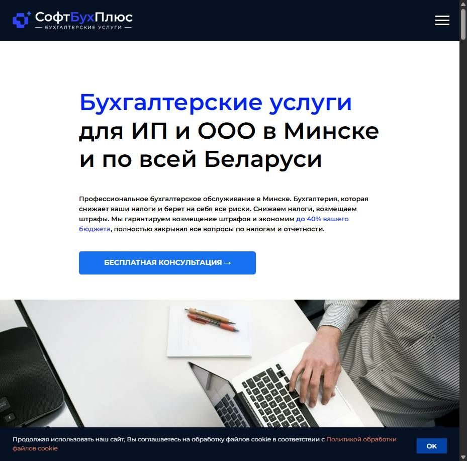
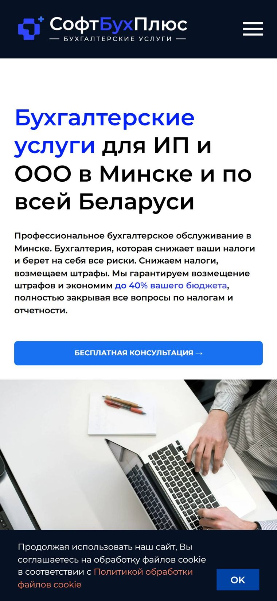

Разбор сайта · softbuhpluse.by · 20 сентября 2026
Открыл сайт так, как его открывает ваш клиент: с телефона, по рекламе, на обычном мобильном интернете. Всё, что ниже, замерено на живом сайте, а не на глаз.
По порядку: от того, что теряет больше всего людей, к мелочам, которые портят впечатление.
С телефона на обычном 4G первый контент появляется через 4,8 секунды, а полностью страница собирается почти 14 секунд. Из рекламы столько не ждут: клик оплачен, а человека уже нет.
Что делаю: убираю лишние внешние скрипты и тяжёлые блоки с первого экрана, оставляю аналитику. Цель: первый экран быстрее двух секунд.
На первом экране общая фраза про профессиональное обслуживание. А ниже по странице лежит то, ради чего к вам идут: возмещение 100% штрафов, страховой полис профессиональной ответственности, 300 компаний за 15 лет, специалисты с опытом от 10 лет.
Что делаю: выношу гарантию и цифры на первый экран, чтобы за две секунды было понятно, чем вы отличаетесь от соседнего объявления.
В шапке на телефоне только бургер: ни номера, ни мессенджера. Часть ссылок для звонка записана с пробелами и скобками, например tel: +375 (29) 684-97-93. Такие ссылки срабатывают не на всех телефонах.
Плюс на сайте два разных номера в разных блоках, и непонятно, какой основной.
Что делаю: один основной номер, кнопка звонка и мессенджеры закреплены на экране телефона, все ссылки привожу к рабочему виду.
На сайте указаны суммы от 125 до 500 BYN, это сильно: конкуренты часто прячут цену совсем. Но она не видна с первого экрана, и рядом нет состава пакета. Человек не понимает, что входит, и уходит сравнивать.
Что делаю: короткий блок «сколько стоит и что входит» сразу под первым экраном, с понятными пакетами для ИП и для ООО.
Услуги, акции, преимущества, команда, отзывы, клиенты, новости. К форме человек доходит уставшим, а внимание размазано ровным слоем по всей странице.
Что делаю: собираю страницу по одной логике: оффер, цены, гарантии, отзывы, заявка. Остальное переношу на отдельные страницы, они полезны для поиска, но мешают на главной.
В одной из форм поле называется «Орлов Александр Петрович»: пример из подписи попал в название поля. Это имя приходит вам в заявках и видно клиенту.
Что делаю: привожу поля в порядок, сокращаю первый шаг формы до имени и способа связи, остальное спрашиваете в разговоре.
Скриншоты сделаны 20 сентября: слева компьютер, справа телефон 390 пикселей на медленном 4G.


Порядок именно такой: сверху то, что быстрее всего вернёт заявки.
За сутки бесплатно соберу макет нового первого экрана на ваших фактах: гарантия, страховка, цифры, цена. Посмотрите вживую с телефона и решите, нужно ли дальше.
Написать в Telegram